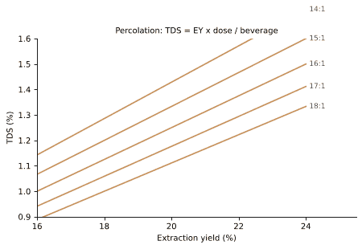

2A. Extraction I: immersion, equilibrium and kinetics
How do solubles leave the grounds, how far can they go, and how fast?
After this chapter you can
- Write mass balances for immersion and percolation brews and calculate extraction yield from each.
- Use the equilibrium desorption model to predict strength and yield from brew ratio, and explain why immersion yield at equilibrium does not depend on the ratio.
- Estimate how long solubles take to leave a particle, and explain why small and large particles extract on different time scales.
- Fit a two-population kinetic model to measurements of strength over time.
- Place a brew on the brewing control chart and predict how grind, ratio, time and temperature move it.
- Relate titratable acidity and sourness to position on the chart.
Prerequisites: Chapter 0, Section 1 (TDS, extraction yield, uncertainty); Appendix A, Section A.2 (concentration units); Appendix C, Sections C.1 and C.4 (first-order kinetics, diffusion).
Leave a French press for eight minutes instead of four, and many baristas will say the coffee is over-extracted. Measure it, and the extraction yield has barely moved. Steep a weak brew for an hour, and its yield still stops near 21%, never approaching the 30% of the bean that is soluble. Something limits how far immersion extraction can go, and something sets how fast it gets there.
This chapter builds the two ideas that explain both observations: equilibrium, which sets the end point, and diffusion, which sets the pace. We use immersion brewing, where all the water and all the coffee sit together, because it is the simplest geometry. Chapter 2B applies the same ideas to water flowing through a bed.
1. Strength, extraction and the mass balance
Two numbers describe a brew. The first is its strength, the total dissolved solids S defined in Chapter 0: the mass of dissolved coffee material per unit mass of brew, written as a fraction (0.0135) or a percentage (1.35%). Strength is what a taster perceives as intensity. The second is the extraction yield E: the fraction of the dry coffee that has dissolved. Extraction yield describes how far the process has gone.
The two are linked by a mass balance, an account of where every gram ends up. We need four masses: the dose of dry coffee mc, the brew water mw, the beverage collected mb, and the dissolved solids ms. The brew ratio is the water per gram of coffee:
| r = mw / mc | (2A.1) |
| where | r | brew ratio (g/g) |
| mw | mass of brew water (g) | |
| mc | mass of dry coffee (g) |
Percolation
In a percolation brew (pour-over, batch filter, espresso), fresh water passes through a bed of grounds and leaves as beverage. If we count only the solids in the cup, then ms = S mb, and
| E = ms / mc = S mb / mc | (2A.2) |
| where | E | extraction yield (fraction) |
| S | strength (TDS) of the beverage (fraction) | |
| mb | mass of beverage (g) |
The liquid left in the bed at the end is ignored. In percolation that liquid is the last water to pass through, which is weaker than the cup, so ignoring it causes only a small error.
Immersion
In an immersion brew (French press, cupping bowl), all the water and all the coffee sit together. At the end, the liquid trapped in the grounds has the same strength as the liquid poured off, so it cannot be ignored. We derive the extraction yield in three steps.
- All the dissolved solids are in the liquid, and the liquid's mass is the water plus the solids: mw + ms.
- The strength is the fraction of that liquid that is solids: S = ms/(mw + ms).
- Multiplying out gives S mw + S ms = ms, so ms(1 − S) = S mw and ms = S mw/(1 − S).
Dividing by the dose and using Equation 2A.1:
| E = r S / (1 − S) | (2A.3) |
| where | E | extraction yield (fraction) |
| r | brew ratio (g/g) | |
| S | strength (TDS) of the liquid (fraction) |
Worked example: Two formulas, two answers
Problem. 15.0 g of coffee steeps in 250 g of water. The liquid reads 1.35% TDS, and you pour off 215 g. Find the extraction yield.
Plan. The brew is an immersion brew, so use Equation 2A.3. Compare with the result of wrongly using the percolation formula.
Solution. The brew ratio is r = 250/15.0 = 16.7. Then E = 16.7 × 0.0135/(1 − 0.0135) = 0.228, or 22.8%. The percolation formula would give 0.0135 × 215/15.0 = 19.4%.
Check. The difference comes from the 35 g of liquid left in the grounds, at full strength, whose solids the percolation formula discards. Using the wrong formula understates immersion extraction by more than three percentage points.
A related quantity is the retained liquid, rret, the mass of liquid held per gram of grounds after brewing. For filter grinds it is about 2 g/g, which is why a 300 g pour-over from 18 to 20 g of coffee yields only about 260 to 270 g in the cup.
2. How far can extraction go? The equilibrium model
Roughly 30% of a roasted bean can dissolve in hot water, yet immersion brews stop near 21%. Liang, Chan and Ristenpart (2021) explained the gap with a desorption model [1]. Desorption is the release of a substance from a solid surface into a liquid; its reverse, the uptake of dissolved material back onto the solid, is adsorption.
The model treats all soluble material as a single substance, an approximation called lumping. Let M be the mass of soluble material in the dose, which is Emax mc, where the maximum extractable fraction Emax ≈ 0.30. At some moment a mass x of it has dissolved and M − x remains in the grounds.
- Material leaves the grounds at a rate proportional to the amount still there: kD(M − x).
- Material returns to the grounds at a rate proportional to the amount in solution: kA x.
At equilibrium the two rates are equal, so kD(M − x) = kA x. Solving for the fraction dissolved:
| x / M = K = kD / (kD + kA) | (2A.4) |
| where | K | extraction equilibrium constant: the fraction of soluble material in solution at equilibrium (dimensionless) |
| kD, kA | rate constants for desorption and adsorption (1/min) |
We call K the extraction equilibrium constant. The extraction yield at equilibrium is the dissolved mass divided by the dose, x/mc = K M/mc:
| Eeq = K Emax | (2A.5) |
| where | Eeq | extraction yield at equilibrium (fraction) |
| Emax | maximum extractable fraction of the dry coffee (fraction) |
The brew ratio does not appear. To find the strength, set Equation 2A.5 equal to the immersion mass balance, Equation 2A.3: K Emax = r S/(1 − S). Writing E for K Emax, multiplying out gives E − E S = r S, so S(r + E) = E, and
| Seq = K Emax / (r + K Emax) | (2A.6) |
| where | Seq | strength at equilibrium (fraction) |
Because K Emax ≈ 0.2 is small compared with any brew ratio, the strength falls roughly as 1/r.
Fitted to one-litre immersion brews over a wide range of ratios, the model gave K = 0.717 ± 0.007, so K Emax = 0.215. Measured equilibrium yields averaged 20.7 ± 1.1% against the predicted 21.5%, and strength was almost exactly proportional to 1/r. In traditional cupping, K was 0.79 for regular and 0.73 for decaffeinated coffee. K did not change between 80 and 99 °C, nor with grind size or roast level over the ranges tested [1]. Figure 2A.1 shows the predictions.

Figure 2A.1. Immersion at equilibrium predicted by the desorption model (K = 0.717, Emax = 0.30). Notice that the yield line is flat: the ratio changes strength, not yield.
The model has three practical consequences. In immersion, the ratio sets the strength, and the coffee sets the yield. Waiting longer cannot raise yield once equilibrium is reached. And the familiar target of 18 to 22% extraction is, for immersion at equilibrium, mainly a property of the coffee rather than of the recipe.
Common misconception
"Steeping a French press longer over-extracts it." If the brew has reached equilibrium, its extraction yield cannot rise further, so a longer steep cannot raise yield. The flavour can still change, through cooling, loss of aroma to the air, oxidation and slow reactions in solution, and a coarse grind may not yet be at equilibrium after four minutes. Measure strength at both times before blaming extraction (Problem 11).
Status of the evidence
The equilibrium model was fitted by one laboratory to one coffee in large batches and to cupping. It treats all solubles as one substance, which cannot be strictly true: caffeine, acids and melanoidins differ in how strongly they bind to the grounds and how fast they move. Its predictions for total dissolved solids are well supported. Its usefulness for individual flavour compounds is untested. Emax = 0.30 was assumed rather than measured for each coffee.
Check your understanding: Sections 1 and 2
3. How fast? Diffusion out of a particle
Equilibrium tells us where extraction ends. To know how long it takes, we have to follow solubles out of a particle. Water reaches broken cells on the surface of a coffee particle almost immediately, and their contents dissolve within seconds. Solubles deeper inside must travel through the particle to reach the surface. They travel by diffusion, the net movement of molecules from regions of high concentration to regions of low concentration, caused by their random thermal motion.
How quickly a substance diffuses is described by its diffusivity D, in m2/s. Appendix C.4 shows that in a time t a molecule typically wanders a distance of order √(Dt). Turning that around, the time to diffuse out of a particle of radius a is of order a2/D. For a sphere, solving the diffusion equation exactly (see the box below) gives the precise time constant:
| τ = a2 / (π2 D) | (2A.7) |
| where | τ | time constant for solute leaving a sphere (s) |
| a | particle radius (m) | |
| D | diffusivity of the solute inside the particle (m2/s) |
After the first few seconds, the solute remaining in the particle falls approximately as e−t/τ: after one time constant 37% remains, after three time constants 5%.
The most important feature of Equation 2A.7 is the square. Halving the particle diameter quarters the extraction time. A fine particle of 100 µm and a coarse particle of 800 µm differ in time constant by a factor of 82 = 64. Figure 2A.2 shows release curves for three sizes.

Figure 2A.2. Release of solute from spheres of three diameters (exact solution, illustrative D = 2 × 10−10 m2/s). Compare the times at which each curve reaches 90%: they scale with the square of the diameter.
Going further: The exact solution for a sphere
Fick's second law in spherical coordinates, ∂c/∂t = D (1/r2) ∂/∂r(r2 ∂c/∂r), describes how concentration c changes inside the particle. With a uniform starting concentration and the surface held at zero, separating variables (Appendix C.4) gives the fraction released:
F(t) = 1 − (6/π2) Σn=1∞ (1/n2) exp(−n2π2Dt/a2).
The n = 1 term decays most slowly, with time constant a2/(π2D), which is Equation 2A.7. The higher terms die away within seconds, which is why a single exponential describes the later stage of release.
Worked example: Fines against boulders
Problem. Take D = 2 × 10−10 m2/s. Find the time constants of a 600 µm particle, a 100 µm fine and a 1,000 µm boulder, and the fraction of solute the boulder still holds after a three-minute brew.
Plan. Apply Equation 2A.7 with a = d/2, then use the d2 scaling for the other sizes.
Solution. For d = 600 µm, a = 3 × 10−4 m and τ = (3 × 10−4)2/(π2 × 2 × 10−10) = 45.6 s. For the fine, τ = 45.6 × (100/600)2 = 1.27 s. For the boulder, τ = 45.6 × (1000/600)2 = 127 s. Using the first term of the exact solution, after 180 s the boulder retains (6/π2) e−180/127 ≈ 0.15, or 15%.
Check. The fine is effectively empty after a few seconds, so fines set the early strength; boulders set how much a longer contact time adds. Real diffusivities in coffee are poorly known and differ between compounds, so trust the ratios more than the absolute times.
4. Two populations of solubles
A single particle size cannot describe a real grind, which contains fines and boulders together, and each particle has broken surface cells as well as intact cells inside. Moroney and colleagues built models on this picture and checked them against measured extraction curves for filter coffee [2][3]. A simple version with two populations, one fast and one slow, describes the strength S(t) of an immersion brew over time:
| S(t) = S∞ [1 − φ e−t/τ1 − (1 − φ) e−t/τ2] | (2A.8) |
| where | S∞ | final strength (fraction) |
| φ | fraction of extractable material in the fast population (fraction) | |
| τ1, τ2 | time constants of the fast and slow populations, τ1 much smaller than τ2 (min) |
Fitting the slow time constant
At late times the fast term has died away, so 1 − S/S∞ ≈ (1 − φ) e−t/τ2. Taking natural logarithms,
ln(1 − S/S∞) ≈ ln(1 − φ) − t/τ2,
which is a straight line in t. Its slope is −1/τ2 and its intercept is ln(1 − φ). Early points lie above the line, because the fast population has not yet finished dissolving; the gap closes after a few multiples of τ1. With only four or five samples you can usually estimate τ2 and φ, but not τ1, which is often shorter than the time to your first sample.
Worked example: Fitting immersion data
Problem. An immersion brew reads 0.88, 1.06, 1.20, 1.31 and 1.35% TDS at 1, 2, 4, 8 and 16 minutes. Estimate τ2 and φ.
Plan. Take S∞ slightly above the last reading, compute ln(1 − S/S∞) for each point, and fit a straight line to the late points.
Solution. With S∞ = 1.36%, the values of ln(1 − S/S∞) are −1.04, −1.51, −2.14, −3.30 and −4.91. A least-squares line through the 4, 8 and 16 minute points has slope −0.227 per minute and intercept −1.34. So τ2 = 1/0.227 = 4.4 min and 1 − φ = e−1.34 = 0.26: about three quarters of the extractable solids came out in the fast stage.
Check. The 1 and 2 minute points (−1.04 and −1.51) lie above the line's values at those times (−1.57 and −1.79), as expected while the fast population is still dissolving.
Your turn. Repeat the fit with S∞ = 1.38%. Problem 10 asks how sensitive τ2 is to this choice.
5. Temperature acts on rate
Hot water extracts faster, because diffusivity rises and viscosity falls with temperature. A separate question is whether temperature changes what is extracted when a brew reaches the same strength and yield.
Two results from UC Davis address it. In the equilibrium study, K did not change between 80 and 99 °C [1]. In a sensory study, drip coffee was brewed at 87, 90 and 93 °C to the same strength and extraction yield, and a trained panel found little difference between them [4]. Within the ordinary hot-brewing range, temperature therefore behaves mainly as a rate variable: it changes how quickly a brew reaches a given strength and yield, and brews that arrive at the same point taste similar.
Cold brew is the exception that marks the edge of that range. Steeped for many hours at or below room temperature, it reaches a pH similar to hot brew (4.85 to 5.13 in one study) but lower titratable acidity, and hot brew showed greater antioxidant activity [5]. Low temperatures do change composition.
Status of the evidence
The temperature result comes from drip brewing between 87 and 93 °C. It has not been established for espresso, for very light roasts brewed cool, or for individual aroma compounds, whose loss to the air rises with temperature. Treat "temperature is a rate variable" as a well-supported rule for hot filter brewing, not a general law.
6. The brewing control chart
With strength and yield defined, every brew can be drawn as a point on one graph. In the 1950s Ernest Lockhart plotted strength on the vertical axis against extraction yield on the horizontal axis. This brewing control chart turns a brew recipe into geometry. Rearranging Equation 2A.2 gives the line on which every percolation brew of a given beverage-to-dose ratio lies:
| S = E (mc / mb) | (2A.9) |
| where | mb/mc | beverage-to-dose ratio (g/g) |
Each ratio is a straight line through the origin with slope mc/mb. At a fixed ratio, changes in grind, time or agitation move a brew along its line; changing the ratio moves it to another line. Figure 2A.3 shows lines for ratios from 14 to 18.

Figure 2A.3. The brewing control chart for percolation, with lines of constant beverage-to-dose ratio. Lockhart's nine labelled zones are deliberately left out (see text).
Lockhart divided the chart into nine rectangular zones with sensory labels such as "bitter" and "under-developed", and for decades the zones were taught as fact. In 2023 a UC Davis group re-mapped the chart with a trained descriptive panel and a large consumer study [6]. The panel found attributes changing gradually across the chart rather than switching at zone boundaries. Bitterness was highest at high strength and high extraction, agreeing with Lockhart. Consumers split into two groups that preferred different regions of the chart. The authors cautioned that the consumers were young and North American [7]. The calculator below draws the chart without zones and shades your ratio line.
Where sourness sits on the chart
Across 744 drip brews, titratable acidity rose in proportion to strength and showed no relationship with extraction yield: stronger coffee contains proportionally more acid, however far extraction went. Trained-panel sourness followed titratable acidity but also depended strongly on extraction, and was highest at high strength and low extraction [8]. A plausible explanation is that acids dissolve early and fast, so at low extraction they dominate the cup. At higher extraction, bitter and roasted compounds that dissolve later mask sourness. Chapter 1 discussed how one taste can suppress another.
Check your understanding: Sections 3 to 6
7. Agitation
Stirring does not change the equilibrium, but it speeds the approach to it. Around each particle sits a thin layer of liquid that moves with the particle and is depleted of solute faster than it is replaced. Solute must diffuse across this boundary layer as well as through the particle. Stirring thins the layer and carries fresh liquid to the particle surface. In immersion brewing, a stir at the start matters most, because it breaks up dry clumps and the floating crust so that all the coffee is wetted. In percolation, the pour itself agitates the bed, as Chapter 2B shows.
Looking ahead
Immersion is the simplest case: all the water meets all the coffee, and equilibrium sets the end point. Most coffee is brewed differently, by pushing water through a bed of grounds. Then the flow rate decides how long the water and coffee are in contact, and the bed itself resists the flow. Chapter 2B asks what controls that flow, and why espresso behaves so differently from filter coffee.
Key equations
| Quantity | Equation | Notes |
|---|---|---|
| Brew ratio | r = mw / mc | Equation 2A.1. |
| Extraction yield, percolation | E = S mb / mc | Equation 2A.2. |
| Extraction yield, immersion | E = r S / (1 − S) | Equation 2A.3. |
| Equilibrium yield and strength | Eeq = K Emax; Seq = K Emax / (r + K Emax) | Equations 2A.5 and 2A.6. |
| Diffusion time constant, sphere | τ = a2 / (π2 D) | Equation 2A.7. |
| Two-population kinetics | S(t) = S∞[1 − φe−t/τ1 − (1 − φ)e−t/τ2] | Equation 2A.8. |
Key terms
adsorption; boundary layer; brew ratio; brewing control chart; desorption; diffusion; diffusivity; equilibrium; extraction equilibrium constant; immersion; lumped model; mass balance; maximum extractable fraction; percolation; retained liquid; time constant.
Labs
Lab L2.1: Immersion extraction curve and equilibrium constant
Aim. Measure an immersion extraction curve, fit its slow time constant, and estimate K from equilibrium brews at several ratios.
Safety
- Hot water and glass: use heat-resistant vessels and pour slowly.
Materials
- Refractometer (or analytical balance for drying)
- Kettle and thermometer
- Three identical heat-resistant vessels with lids
- Syringe filters or paper filter cones
- One coffee, ground for French press
Method
- Brew 15 g in 250 g of water at a recorded temperature, stir once at 30 s, and cover.
- At 1, 2, 4, 8 and 16 minutes, draw about 5 mL from mid-depth, filter it, seal it and let it cool.
- Read all samples at room temperature.
- Separately brew 15 g at ratios of 8, 12, 16 and 20, covered, for 20 minutes, and read the final TDS of each.
Data sheet
| Run | Ratio | Time (min) | TDS (%) | ln(1 − S/S∞) |
|---|---|---|---|---|
Analysis
- Fit τ2 and φ as in Section 4.
- For the ratio series, compute E = rS/(1 − S) for each brew. Is E independent of r? Estimate K Emax as their mean.
- Plot S against 1/r and compare with Equation 2A.6.
What to expect. Extraction yields near 20 to 23% at all ratios if equilibrium is reached; strength roughly proportional to 1/r.
Lab L2.2: A nine-brew grid on the control chart
Aim. Map how grind and ratio move brews on the chart, and taste the results blind.
Materials
- Cone dripper and filters
- Grinder
- Refractometer
- Scale and kettle
- Cups labelled with random codes
Method
- Choose three grind settings and three beverage-to-dose ratios (for example 15, 16.5 and 18).
- Brew all nine combinations in random order on one day; record dose, beverage mass and TDS.
- Have a partner code the cups; taste blind and score sourness, bitterness and liking on 0 to 15 scales.
Data sheet
| Code | Grind | Ratio | Beverage (g) | TDS (%) | EY (%) | Sour | Bitter | Liking |
|---|---|---|---|---|---|---|---|---|
Analysis
- Plot each brew on the chart and label it with its scores.
- Where is bitterness highest? Where is sourness highest? Compare with Section 6.
Problems
- [A, Section 1] State the difference between strength and extraction yield, and describe a brew that is strong but under-extracted. Solution
- [A, Section 1] Why is the percolation formula a reasonable approximation for pour-over but not for immersion? Solution
- [B, Section 2] Derive Equation 2A.6 for the equilibrium strength, starting from Equations 2A.3 and 2A.5. Solution
- [B, Section 2] Using K = 0.717 and Emax = 0.30, predict the equilibrium strength for immersion ratios of 10, 15 and 20. Solution
- [B, Section 1] A 300 g pour-over from 20 g of coffee yields 262 g of beverage. Estimate the liquid retained per gram of grounds. Solution
- [B, Section 3] If τ for a 600 µm particle is 45.6 s, what is it for 400 µm and 1,000 µm particles? Solution
- [B, Section 3] Using only the slow exponential, what fraction of a particle's solute remains after three time constants? Solution
- [B, Section 6] A brew lies at 1.20% TDS and 18.0% extraction yield with a beverage-to-dose ratio of 15. You grind finer and reach 20.4% extraction at the same ratio. What is the new strength? Solution
- [B, Section 6] What beverage-to-dose ratio places a brew at 1.25% TDS and 20.0% extraction yield? Solution
- [B, Section 4] Repeat the fitting example with S∞ = 1.38%. How sensitive is τ2 to the assumed final strength? Solution
- [C, Section 2] A barista claims that steeping a French press for 8 minutes instead of 4 over-extracts it. Using the equilibrium model and the kinetics of Section 4, evaluate the claim and design a test. Solution
- [C, Section 2] Why is one equilibrium constant unlikely to describe caffeine, chlorogenic acids and melanoidins equally well? What experiment would test this? Solution
- [C, Section 3] Using the d2 scaling, explain why a grinder that produces more fines at the same median size can produce a stronger brew in a fixed short contact time. Solution
- [C, Section 6] Propose an explanation of why sourness is highest at high strength and low extraction, while titratable acidity depends only on strength. Solution
Tiers: A recall, B calculation, C analysis or design.
References
- Liang J., Chan K.C., Ristenpart W.D. (2021), An equilibrium desorption model for the strength and extraction yield of full immersion brewed coffee, Scientific Reports 11:6904.
- Moroney K.M. et al. (2015), Modelling of coffee extraction during brewing using multiscale methods: an experimentally validated model, Chemical Engineering Science.
- Moroney K.M. et al. (2016), Coffee extraction kinetics in a well mixed system.
- Batali M.E., Ristenpart W.D., Guinard J.-X., brew temperature at fixed strength and extraction has little impact on the sensory profile of drip brew coffee, Scientific Reports; summarised by the SCA.
- Rao N.Z., Fuller M. (2018), Acidity and antioxidant activity of cold brew coffee, Scientific Reports 8.
- Batali M.E. et al. (2023), A new Coffee Brewing Control Chart relating sensory properties and consumer liking to brew strength, extraction yield, and brew ratio, Journal of Food Science 88:2168.
- Fresh Cup, Why the new Coffee Brewing Control Chart is a big deal.
- Batali M.E., Cotter A.R., Frost S.C., Ristenpart W.D., Guinard J.-X., titratable acidity, pH and sourness in drip coffee, ACS Food Science and Technology; summarised in SCA 25 magazine, issue 15.
Answers to self-checks
Check your understanding: Sections 1 and 2
- 21.95 %. r = 16.67; E = 16.67 × 0.0130/0.987 = 0.2195, or 21.95%.
- roughly halve the strength and leave the yield unchanged. Eeq = K Emax does not depend on r, while Seq falls roughly as 1/r.
Check your understanding: Sections 3 to 6
- 5 s. τ scales with d2: 80 × (200/800)2 = 5 s.
- little sensory difference. At fixed strength and extraction, a trained panel found little difference across this range.
- 15 . mb/mc = E/S = 20.25/1.35 = 15.0.
Worked solutions to all problems: 2A. Extraction I: immersion, equilibrium and kinetics solutions.
Upstream, Second edition, version 2.2 (changes and errata). © 2026 [Author name]. Licensed for personal use; see licence.